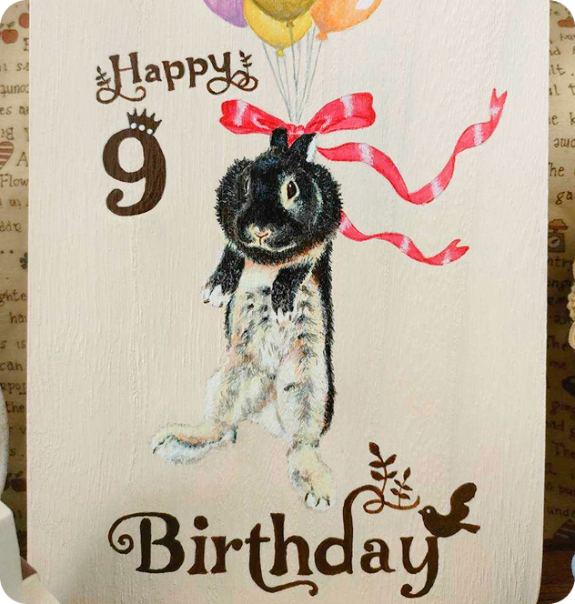
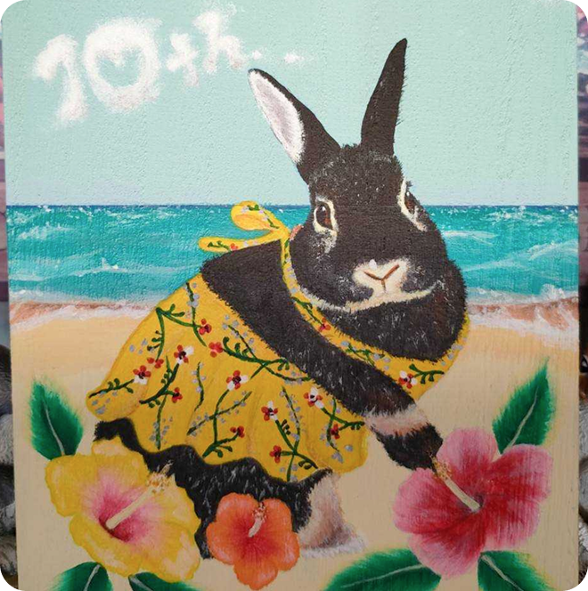
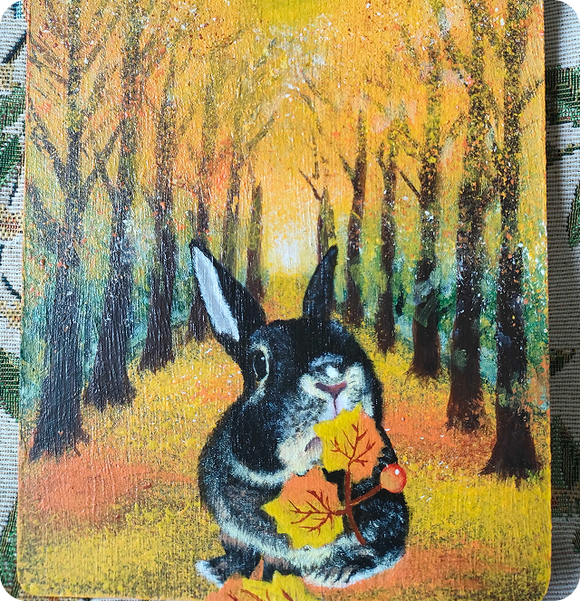

ABOUT
self_introduction
Nao
システムエンジニアとして現役で働きながら、以前より興味のあったWebデザインの制作を始めました。
バックエンドのコーディングも楽しいのですが、より自分の感性を活かしたいと思ったことがきっかけです。
アクセシビリティを意識した 誰にとっても使いやすいWebサイトを制作することを心がけ、日々スキル向上に努めています。
Skills
Web Design
・Webサイトデザイン（Figma / Canva）
・ワイヤーフレーム作成
・UI / UXを意識したレイアウト設計
・バナー / SNS用画像制作
Frontend
・HTML / CSS を用いたコーディング
・レスポンシブ対応（スマホ・タブレット対応）
・デザインカンプからの忠実なコーディング
・JavaScript / jQuery実装
WordPress
・オリジナルテーマ構築
・静的HTMLサイトのWordPress化
・カスタム投稿タイプの作成
Others
・Git / GitHub
・PHP / Ruby / Salesforce Apex / LWC
・SQL（MySQL / SQLServer / PostgreSQL / Salesforce SOQL）
Strengths
高い集中力と強いコミット力
仕事であっても趣味であっても、自分の決めたゴールに達するまでは時間を惜しまずに粘ります！（というとよりもむしろ、時間を忘れるくらい作業に没頭することが多いです。）
常に強い責任感を持って何事にも取り組んでいます。
エンジニア視点の設計力
システムエンジニアとして培った設計力やロジカルな思考を活かし、見た目だけでなく「使いやすさ」や「保守のしやすさ」まで意識したWebサイト制作を心がけています。
丁寧なヒアリングと実装力
現職の経験から、要望の背景を汲み取ることを大切にしています。
技術だけでなく「相手にとってわかりやすい形」を意識して形にすることが強みです。
Career
2014 〜 2015
職場環境に危機を感じ、キャリアを見つめ直す機会を得る
美容系専門学校卒業後、某大手エステサロンへ新卒入社。しかし労働環境に課題のある職場に配属され、（ある意味で）多くの学びを得る。 また、これが自身のキャリアの方向性を再検討するきっかけにもなり、転職を決意。
2015 〜 2017
思い切ってIT業界へ転職！
「どうせやるなら専門的な職種がいい..！」と思い立ち、意を決してIT系企業へ転職。ちなみに、この時までPCをまともに触った事がなかった。（笑） 1年以上PM補助として働き、その後会社からプログラミングスクールへ通わせてもらった後、エンジニアメンバーがより多く在籍する現自社へ転職。
2017 〜 2020
現自社へ転職し、数々の常駐先でシステム開発を行う
再びSIとして、主にPHPを扱う現場へ赴き、色々な種類のシステム開発を行う。（医療機関情報管理システム、大学出願システム、原子力データ検索システム などなど） この期間の中盤あたりから、「もしかしてこの業界向いてるかも...？」と思い始める。
2020.2
パンデミックの影響により、リモートワークとなる
参画したての常駐先の職場がリモートワークに切り替わり、7年間の電車通勤から解放され、私生活が大いに充実し始める。 現職種が出社せずとも在宅で可能であることに気づき、過去の自分の大胆な選択に感謝する。（笑）
2021.4〜
RubyやApexに触れ、動的型付け言語に苦戦する
常駐先内でチーム移動があり、これまで触れなかったRubyやSalesforce Apexに触れる。 PHP時代では意識してこなかった「型」に苦しみながらも多数のカスタムシステムの作成/修正を行う。Salesforce Lwc で html/js/cssに触れる。
2025.5
Webデザイン制作を学び始める
「せっかくならもっと自分の感性を活かした事がしたい..！」とふと思い立ち、マンツーマンでWebデザインを学べるスクールへ入学。 コース期間を無駄にするまいと、週4,5日の隙間時間や業後に2〜3時間の作業を7ヶ月ほど継続。ChatGPTと大親友になる。
2025.12〜
本業と並行して、Webデザインの制作活動を始める
ご縁があり、ご紹介いただいた会社と業務委託契約を結び、現在は制作案件へ参画しながら知見を溜めつつスキル向上に勤しむ。
Sketch
幼少期から絵を描く事が大好きでした。これまでアナログ絵ばかり描いていましたが、このポートフォリオ作成を機に、デジタル絵に挑戦しました。このサイトで使用しているイラスト画像は、すべて自作です！
また、5歳の時から実家でうさぎを飼っており（今の子は3代目です）、うさぎの絵を描くことが圧倒的に多いです！
写真は、3代目の子の誕生日ごとに描いてきたトールペイントです。（木の板にアクリル絵の具で描いています。）
温かみのあるタッチのイラストで、サイトの雰囲気づくりや世界観の表現にも対応しています。
用途やテイストに合わせた制作も可能です。



最後までお読みいただき、
ありがとうございます！